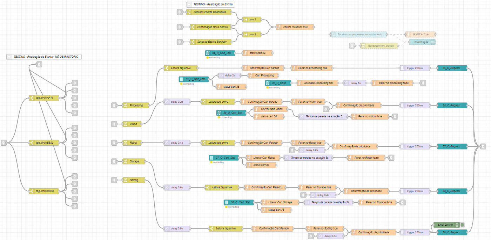
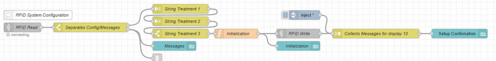
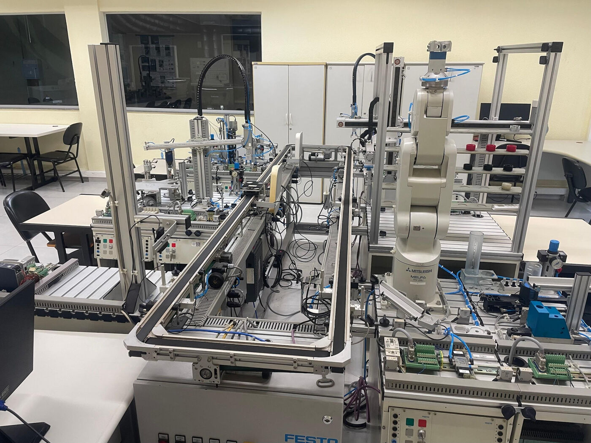

Modernização de um Sistema Flexível de Manufatura (FMS) legado, substituindo lógicas engessadas por um roteamento dinâmico controlado via planilhas .csv e protocolo OPC UA.
Na Indústria 4.0, a flexibilidade é essencial. No entanto, muitas indústrias operam com Sistemas Legados robustos, mas difíceis de integrar a novas tecnologias. No laboratório de Automação II da UNESP Sorocaba, o Sistema Flexível de Manufatura (FMS) da Festo enfrentava esse exato problema.
O roteamento das peças via tecnologia RFID era operado por um código rígido e fechado no Node-RED. O sistema suportava apenas três tipos fixos de peças (AAAA, BBBB, CCCC). Adicionar um novo tipo de produto ou alterar a rota de produção exigia que o código fosse totalmente reescrito, um processo demorado, sujeito a erros e inacessível para operadores sem conhecimento avançado em programação.

Para solucionar a falta de flexibilidade, o projeto propôs mover a lógica de roteamento para fora do código do Node-RED, centralizando-a em um formato universal e de fácil edição: arquivos de valores separados por vírgula (.csv).
O arquivo CSV funciona como uma matriz de decisão. Cada linha representa o ID da peça (Part Number), e cada coluna representa uma estação do FMS (Testing, Processing, Vision, Robot, Storage e Sorting).

Para fazer a ponte entre o sistema de controle (Node-RED) e o chão de fábrica (CLPs do FMS), foi utilizado o protocolo de comunicação padronizado OPC UA. Ele garante que a troca de dados entre o servidor e o sistema RFID seja bidirecional, segura e em tempo real.
Uma vez que a peça é liberada na primeira estação, o número de identificação é gravado na tag RFID. Ao chegar nas estações seguintes, a antena lê a tag e o Node-RED aguarda o sinal do CLP confirmando que o processo daquela estação foi concluído. Só então a peça é liberada para o próximo destino estipulado pelo CSV.

A implementação da nova estrutura trouxe uma melhoria dramática para a operação do sistema. A lógica centralizada no arquivo .csv reduziu drasticamente o número de nós necessários no fluxo do Node-RED, otimizando o processamento computacional e facilitando manutenções futuras.
Mais importante do que a limpeza no código foi o ganho de acessibilidade operacional. Agora, planejadores de produção e operadores de chão de fábrica podem alterar as rotas e inserir novos produtos no FMS apenas editando uma planilha no Excel, sem precisar de nenhum conhecimento em programação no Node-RED. A solução provou que é possível modernizar Sistemas Legados com baixo custo, inserindo-os de vez nos paradigmas da Indústria 4.0.